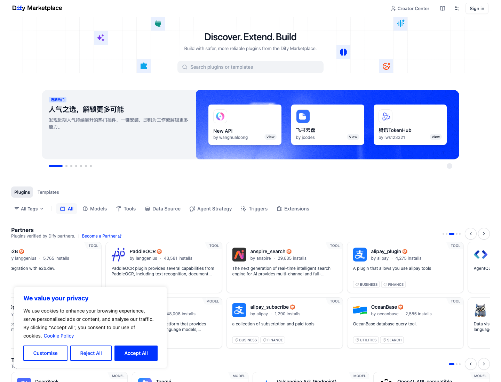
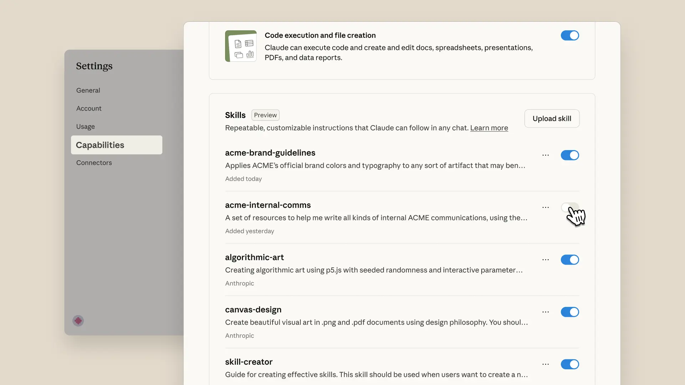
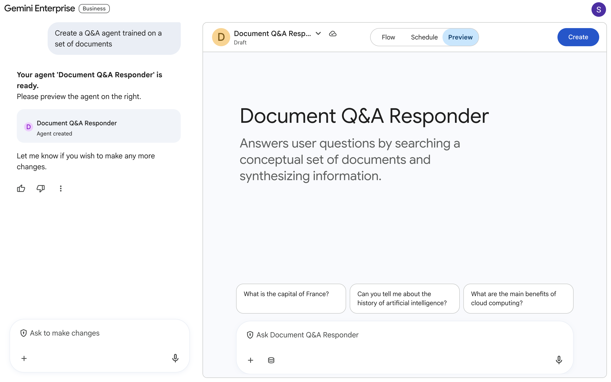
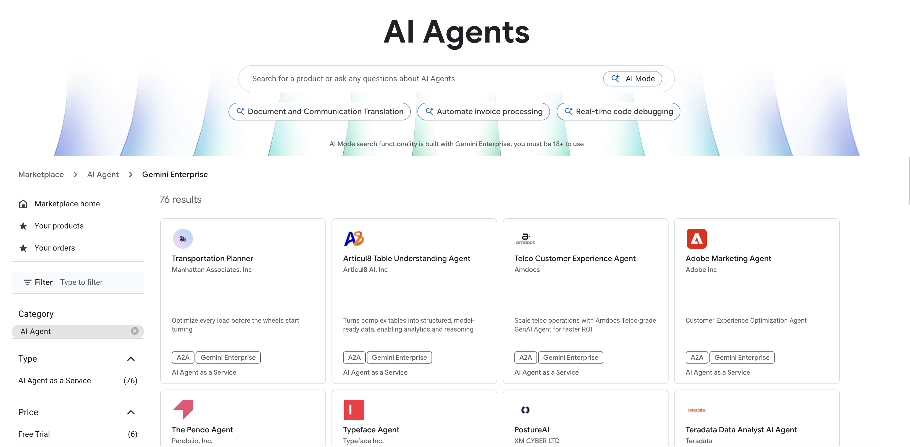
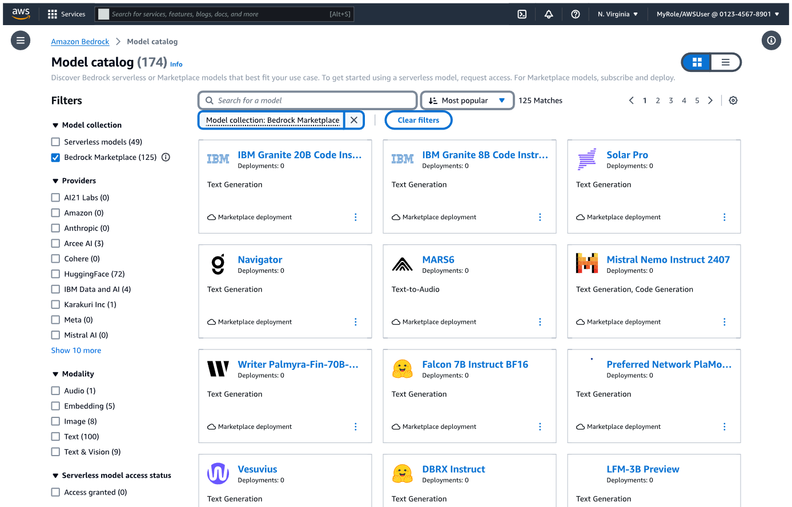
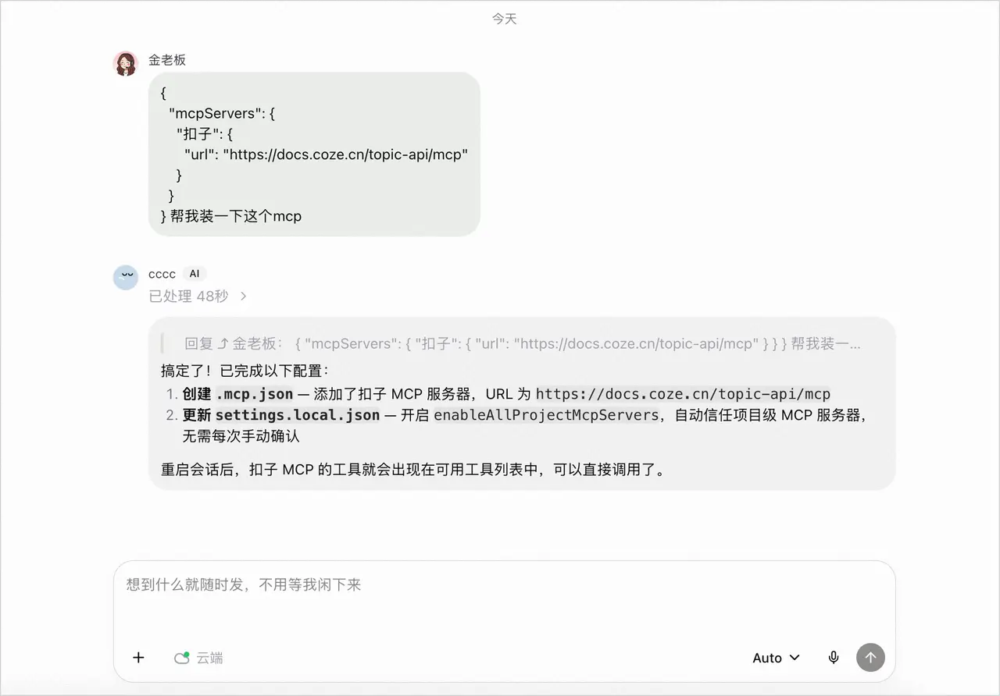

1
先卖“完成任务”，再解释技术
用户先选“研究、销售、客服、数据分析”等任务，再理解 Agent / Skill / MCP 的分工。技术名词应是标签与筛选项，不应成为首页第一道门槛。
影响：降低首屏理解成本，提升首页 → 试用点击。
对 12 个海内外主流 AI 平台进行公开页面与官方文档对标，覆盖 MCP、Skill、Agent、案例、试用、服务开通、工具与广场、个人中心、积分/用量统计、服务管理。输出的不是风格拼贴，而是一套可直接进入信息架构和视觉设计的官网蓝图。
如果这五个问题需要跨官网、文档、控制台、工单才能回答，再高级的 3D 光效也只是包装。
先给决策，不把读者埋进竞品截图。以下结论直接决定官网的结构、视觉密度与转化路径。
用户先选“研究、销售、客服、数据分析”等任务，再理解 Agent / Skill / MCP 的分工。技术名词应是标签与筛选项，不应成为首页第一道门槛。
卡片不能只放名称、图标和一句介绍；至少要有适用任务、交付物、提供方、价格方式、安装量/验证状态、权限摘要与“立即试用”。
Dify 的免费额度、Google 的创建-预览同屏、扣子的对话安装，都在把配置推后。优秀路径不是“先买资源”，而是“先获得一次可感知结果”。
MCP/Agent 涉及数据与执行权。详情页必须前置权限、数据去向、发布者、版本、可用性、错误率、审核与退出机制。
用户需要从“我还有多少”下钻到“谁、在哪个服务、因何任务、消耗多少、是否异常”。把余额、成本、配额、调用与成效放进统一账本。
官网承诺的能力对象、价格口径、案例标签，要与开通后的控制台名称和状态完全一致。不要让官网说“智能体”，控制台却只剩资源 ID。
市场不缺“AI 平台”。缺的是让非技术用户敢试、让开发者好接、让管理员敢批、让财务看得懂的一体化服务门户。
推荐把官网定位从“技术能力门户”升级为“AI 服务操作系统”：发现、体验、开通、运行、治理、结算都在同一套对象与语言里完成。
调研基于截至 2026-10-08 可访问的官网、官方产品页和官方文档。登录态控制台无法公开核验的部分，不做“已上线”推断。
Apps/Plugins、Agent、开发者平台与企业管理形成“对话内发现 + 平台侧发布”的双面生态。
用 Connectors、Skills、Agent SDK 拆清“连接、知识与执行”，概念层级最清楚。
把 Agent Builder、Marketplace、Gallery 与管理员治理串成企业级分发闭环。
Agent Store 连接开发者提交、管理员审批、组织内发布与 Entra 治理。
传统云市场结构强，筛选、订阅、部署、监控完整，但首访理解成本高。
模型、数据集、Space、MCP、Skill 与 Agent 工具共享同一 Hub 生态。
插件与模板在同一 Marketplace，以一键安装、安装量、Partner Verified 降低试用门槛。
Agent、Skill、MCP、技能包、积分、订阅与商店交易链路最接近消费级产品。
One Key MCP、按量后付费与自定义 MCP 部署，把“接入”压缩为少数操作。
RAG、Agent、工作流、UI Builder、组件、知识库与应用分发功能覆盖广。
强调构建、分发、治理和 AgentOps，并用医疗、金融、物业等量化案例建立信任。
Runtime、Sandbox、MCP、网关、监控与费用拆解完整，偏强控制台/工程视角。
| 平台 | 首页叙事 | MCP | Skill | Agent | 案例 | 试用/开通 | 广场 | 用量/积分 | 服务管理 | 一句话判断 |
|---|---|---|---|---|---|---|---|---|---|---|
| OpenAI | 5 | 5 | 4 | 5 | 4 | 4 | 5 | 4 | 5 | 生态入口最自然 |
| Anthropic | 5 | 5 | 5 | 5 | 4 | 4 | 4 | 4 | 4 | 概念与信任表达最佳 |
| 4 | 4 | 3 | 5 | 4 | 3 | 5 | 4 | 5 | 创建、分发与治理一体 | |
| Microsoft | 3 | 4 | 3 | 5 | 4 | 3 | 5 | 4 | 5 | 组织审批链最成熟 |
| AWS | 2 | 4 | 2 | 5 | 4 | 2 | 5 | 4 | 5 | 强治理，弱首访友好 |
| Hugging Face | 3 | 5 | 4 | 4 | 3 | 4 | 5 | 3 | 4 | 开放生态对象最统一 |
| Dify | 4 | 3 | 3 | 4 | 3 | 5 | 5 | 4 | 4 | 发现与一键复用强 |
| 扣子 | 4 | 5 | 5 | 5 | 3 | 5 | 5 | 5 | 4 | 消费级交易闭环最佳 |
| 阿里百炼 | 3 | 5 | 4 | 5 | 4 | 4 | 4 | 4 | 5 | MCP 开通分级清楚 |
| 百度千帆 | 3 | 4 | 3 | 5 | 3 | 3 | 3 | 3 | 4 | 功能全，品牌入口重 |
| 腾讯 ADP | 3 | 4 | 4 | 5 | 5 | 3 | 3 | 3 | 5 | 生产案例与治理强 |
| 火山 AgentKit | 3 | 5 | 4 | 5 | 3 | 3 | 3 | 4 | 5 | 工程生命周期最细 |
评分是本次对“公开页面是否可理解、可到达、可执行”的启发式评价（1–5），不是产品能力排名。部分管理功能需登录，未公开核验的环节从严评分。
截图用于分析布局与交互模式，版权归各平台所有。每张图后都给出“应该借鉴什么，而不是照抄什么”。






以下把用户提出的功能逐一拆成“最佳模式、应该展示什么、最容易犯的错”。
首屏一句话回答“能完成什么”，并给业务用户“直接试”、开发者“接入能力”、企业管理员“查看治理”三条路径。案例、服务广场和定价在首屏 2 次滚动内出现。避免“全栈、领先、赋能、生态”四词循环。
详情页列出 tools、权限、读/写动作、认证方式、数据接收方、版本、可用区、运行状态、最近更新和兼容客户端。参考扣子与阿里百炼的一键连接；补上企业审批和变更 diff。
卡片上展示适用任务、输入/输出、需要的 MCP、脚本执行权限、作者、版本、评分和样例结果。参考 Anthropic 的启停管理、扣子的技能包与付费订阅，不要把 Skill 伪装成 Prompt 模板。
按业务结果命名，如“竞品研究 Agent”“客服质检 Agent”。详情页先给任务演示、交付物和 SLA，再展开模型、Skill、MCP、知识库与运行环境。创建后必须立即进入 Preview。
按行业、角色、任务、接入方式、部署形态筛选；每个案例固定呈现“问题—方案—上线周期—结果—技术栈—可复用服务”。腾讯 ADP 的量化案例有效，但应再补方法、口径和下一步 CTA。
默认提供样例数据/沙盒额度；试用页显示剩余次数、预估消耗与权限模拟。试用成功后，把本次配置一键转为正式服务。价格、免费额度、自动续费与停服规则在确认前一次说清。
Agent、Skill、MCP、Tool、Template、Dataset 可分 Tab，但搜索、筛选、收藏、比较、试用、安装和信任徽章统一。Dify 的“插件 + 模板”和 Google 的自然语言搜索值得组合。
一级分为：我的服务、我的资产、我的团队、账单与权益、开发者凭证、安全与授权。首页提供继续任务、待处理授权、即将到期、异常服务和最近交付物。
统一显示现金、套餐额度、赠送积分、有效期、任务消耗、模型/工具拆分、团队成员/项目分摊、趋势和预算预警。参考扣子的积分入口与 OpenAI 的项目筛选/导出，再增加“成果成本”。
状态采用草稿、试用中、待审批、运行中、需更新、暂停、已到期、已归档。列表直接展示健康度、版本、调用量、成本、最近错误、绑定 Agent 和负责人，支持批量续费、停用与权限复核。
Agent、Skill、MCP、Tool 常被混用，直接导致导航、卡片和计费口径混乱。建议采用“结果—方法—连接—动作”四层模型。
代表用户工作的数字角色，负责理解目标、规划步骤、调用能力并交付结果。
用户问：它能替我完成什么？可复用的专业知识、流程、模板和脚本，教 Agent 按什么标准把事情做好。
用户问：它为什么做得专业？连接外部数据与服务的标准接口，声明可用工具、资源、权限与认证。
用户问：它能访问什么、会把数据给谁？真正执行一次查询、写入、调用或计算的原子能力，是可观测与计费的最小单位。
用户问：刚才具体做了哪一步？首页讲 Agent 的结果，广场讲对象的选择，详情页讲 Skill/MCP 的组成，控制台讲 Tool 的运行与成本。
Template 是预配置方案；Dataset 是可授权的数据资产。它们可以进入广场，但不要与四层核心概念争夺主导航。
公开官网负责发现与建立信任，登录后工作台负责运行与治理；两端通过“同一服务对象、同一详情页、同一状态”连续衔接。
“描述你想完成的工作” → 推荐 Agent/模板 → 立即试用。隐藏 API、Runtime 等工程词。
“连接你的服务或构建 Agent” → SDK/MCP/调试 → 提交上架。突出文档、状态与版本。
“统一纳管 AI 服务” → 目录、审批、预算、安全、审计。突出可控性和规模化。
每一阶段只推动一个关键动作，并明确用户当下最需要的证据。
首屏给任务输入与角色入口。
指标：有效首屏 CTA按结果、行业、角色、交付物检索。
指标：列表 → 详情样例、案例、权限、价格、提供方。
指标：详情 → 试用样例数据跑一次真实任务。
指标：试用成功率复用试用参数，渐进授权与计费。
指标：开通完成率健康、版本、用量、成本与异常。
指标：7/30 日活跃以成果、节省时间和稳定性证明价值。
指标：续费 / 扩容这是设计范围，不建议只画首页。真正决定产品是否可用的是首页之后的 11 张页面。
任务式 Hero、三角色入口、热门服务、场景方案、案例、信任与定价。
首页 → 试用统一搜索、六对象 Tab、任务/行业/价格/权限/验证筛选、比较与收藏。
列表 → 详情价值、Demo、交付物、组成、权限、价格、版本、健康、案例与固定 CTA。
详情 → 试用样例任务、步骤可见、结果预览、消耗预估、失败诊断、一键保存配置。
试用成功套餐与额度、数据授权、绑定项目/Agent、预算、确认与开通回执。
开通完成继续任务、待办授权、异常服务、最近成果、余额与本月用量。
首日激活Agent/Skill/MCP 全量列表，状态、负责人、成本、版本、绑定关系和批量操作。
管理自助率余额构成、有效期、项目/成员/服务分摊、趋势、导出、预算预警和异常解释。
费用可解释健康度、Trace、错误、延迟、调用、版本差异、权限变更、暂停与回滚。
故障自愈行业/任务筛选，问题—方案—结果—技术栈—同款服务完整映射。
案例助攻Quickstart、SDK、MCP、API、调试器、状态页、Changelog、提交上架。
首次成功调用成员、角色、审批、目录可见、预算、数据边界、密钥、审计与安全策略。
审批时长不建议继续使用满屏紫色渐变、漂浮粒子和抽象球体。它们只能表达“像 AI”，不能表达“这项服务可靠、可试、可管”。
从验证过的 Agent、Skill 与 MCP 中选择。先试一次，再决定开通。
大标题有观点，正文高可读；避免所有模块都用同样大小的卡片。
Hero 用真实任务、结果和状态，不再用无意义机器人插画。
展示 Agent 计划、工具调用、授权确认与结果生成；不用纯装饰光效。
官方、合作方验证、组织批准、安全审查分开，点击可查看依据。
试用、开通、扩容按钮旁显示本次预估、免费额度与计费口径。
列表是“查看详情”，详情是“立即试用”，试用成功后才是“正式开通”。
先修对象和路径，再做品牌包装。下面的提升幅度是实验目标，不是既成事实。
比较“全栈 AI 平台”与“描述任务 → 推荐服务”的首屏。
成功标准：有效试用启动率提升 ≥30%增加样例结果、权限、价格、验证状态和安装量。
成功标准：详情 → 试用提升 ≥20%先运行一个样例任务，成功后复用参数进入正式开通。
成功标准：开通完成率提升 ≥15%把消耗拆到项目、服务、任务、成员和工具。
成功标准：费用相关咨询下降 ≥25%案例页直接关联可试用的 Agent/Skill/MCP 与上线步骤。
成功标准：案例助攻试用提升 ≥20%默认显示影响用户的异常、版本、成本和待办，不只展示 ID。
成功标准：定位问题时间下降 ≥30%实验建议：至少覆盖完整工作周；同时观察转化率、任务成功率、授权取消率、首次价值时间、7/30 日留存、支持工单与每个成功任务成本，避免只优化点击。
所有“平台已提供某功能”的事实陈述都尽量回到官方页面；设计建议与分数属于本报告分析判断。